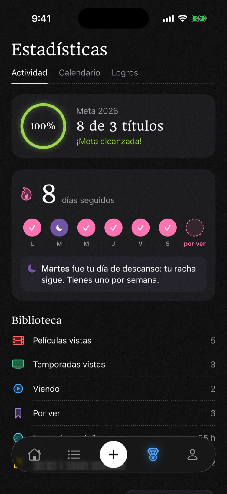
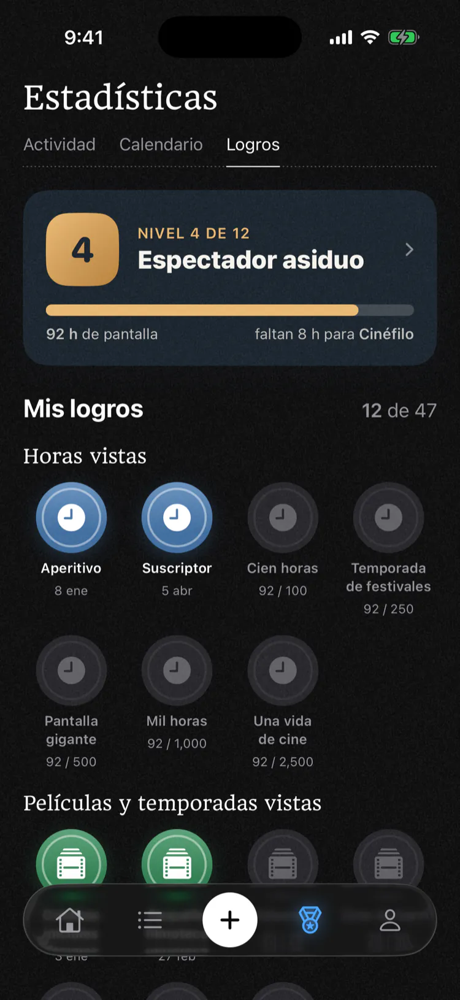

Porcom — Diario de películas y series
Un pequeño diario para todo lo que ves.
Tráileres, episodios, veredictos y tus horas de pantalla, en un solo lugar. Gratis, sin cuenta, sin anuncios y sin suscripción.

Todo lo que ves, en un solo lugar.
La pantalla de inicio muestra lo que ves esta noche. Busca un título: el póster, la sinopsis, el reparto y el tráiler vienen de TMDB.
Cada título se abre con su tráiler.
La página de un título reúne su tráiler, tu veredicto y tu progreso, con los servicios donde está disponible en Canadá.

Anota cada episodio con un toque.
Toca Continue después de cada episodio, o elige el episodio en el que vas. Cada actualización se guarda como una sesión.

Tus horas de pantalla, rachas y una meta anual.
Horas de pantalla, títulos vistos y tu racha, con una meta para el año.

Un calendario de todo lo que viste.
Cada sesión queda en tu calendario, día a día.

Niveles, logros y retos mensuales.
Doce niveles por subir, logros por desbloquear y un reto cada mes.

Comparte un título o tu año, como imagen.
Tu veredicto sobre un título, o tu año en pantalla, listos para una publicación o una historia.

Todas las funciones.
Tráileres
Cada título se abre con su tráiler
Episodios
Un toque después de cada episodio
Veredictos
Meh, Liked, Loved it!, Devoured!
Estadísticas
Horas, rachas y una meta anual
Niveles
Doce niveles y un reto mensual
Widgets
Tu próximo episodio en la pantalla bloqueada
iCloud
Tu diario en tu iCloud privado
Compartir
Un título o tu año, como imagen
Letterboxd
Exporta las películas que viste
Gratis
Sin cuenta, sin anuncios, sin suscripción
Preguntas frecuentes.
¿Porcom es gratis?
Sí. Porcom es gratis, sin anuncios, sin suscripción y sin cuenta.
¿Porcom está en español?
Todavía no. La app está en inglés y francés; este sitio está en español para presentártela.
¿Necesito una cuenta?
No. Porcom funciona sin cuenta ni registro. Tu diario se guarda en tu iPhone y se sincroniza con tu iCloud privado, al que no tenemos acceso.
¿Cómo agrego una película o una serie?
Búscala por título: el póster, la sinopsis, el reparto y el tráiler vienen de TMDB. Una serie se agrega temporada por temporada, cada una con su póster y su veredicto. También puedes escribir un título a mano.
¿Cómo sé en qué episodio voy?
Toca Continue después de cada episodio, o elige el episodio en el que vas. Cada actualización se guarda como una sesión, que alimenta tus estadísticas, tu calendario y tu racha.
¿Por qué veredictos en lugar de estrellas?
Porque vienen del blog de Porcom, donde cada publicación es un tráiler, un título y un veredicto: 👎 Meh, 👍 Liked, ❤️ Loved it! y 🔥 Devoured!. Para matizar, califica de una a cinco estrellas el guion, los personajes, la actuación, la dirección, lo visual, la banda sonora y el final.
¿Dónde puedo ver un título?
La página de cada título muestra los servicios de suscripción donde está disponible en Canadá, según los datos de JustWatch que proporciona TMDB.
¿Y si cambio de iPhone?
Tu diario se sincroniza con tu iCloud y vuelve en tu nuevo iPhone. También puedes exportar un archivo de respaldo de Porcom en cualquier momento y restaurarlo en otro iPhone.
¿Puedo exportar a Letterboxd?
Sí. Porcom exporta las películas que viste a un archivo CSV en el formato de importación de Letterboxd, con la fecha, tu veredicto y tus notas. Las series se quedan en el respaldo de Porcom.
¿Porcom está disponible en Android?
No. Porcom está disponible para iPhone, en inglés y francés.
¿Más preguntas? Visita el soporte.
Guías.
- Seguimiento de series
Cada serie, episodio a episodio
- Diario de películas
La fecha, el veredicto y cada repetición
- Lista para ver
Los títulos por ver, vistos en un tráiler
- Resumen del año
Tu año en pantalla, listo para compartir
- Dónde ver
Las plataformas en Canadá
- Alternativa a TV Time
TV Time cerró: sigue con tus series
- Alternativa a Letterboxd
Películas y series, en privado
- Alternativa a Trakt
Sin cuenta ni suscripción
- Alternativa a Serializd
También películas, sin muro social
- Alternativa a Simkl
Sin cuenta ni anuncios
- Alternativa a JustWatch
Un diario, no solo una guía de streaming
- Alternativa a IMDb
Tu historial, más allá de una lista
- Alternativa a BetaSeries
Series y películas, en privado
- Alternativa a Sequel
Pensado solo para películas y series
- Alternativa a Sofa Time
Gratis, el tráiler primero
- Novedades
Todas las versiones de Porcom
También te puede gustar.
- Arpente
Cada paso cuenta una historia (próximamente)
- Reliure
Tu vida lectora, encuadernada
- Dernier Verre
Uno más, perfectamente mezclado (próximamente)
- Coutume
Tus hábitos, un día a la vez (próximamente)
- Omnomnom
Camisetas tipográficas con sentido del humor, impresas y enviadas por Threadless
De los mismos creadores.
- Puuunch
Control de tiempo y hojas de horas para equipos pequeños.
- Makearesu.me
Crea un CV en 5 minutos